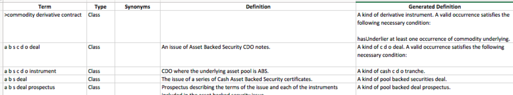

EDM Council FIBO Glossary
Generated from the OWL, the FIBO glossary is a list of classes and properties defined in FIBO, including their logical definition, curated natural language definition and synonyms where available. As with all of FIBO, there is a Production version of the Glossary, which includes definitions of terms that have been vetted by the FIBO content teams, as well as a Development version, which includes terms that are currently being developed.
There are 3 ways to work with the FIBO Glossary.
- Web Searchable
- Downloadable as a .csv for working in a spreadsheet
- Downloadable as a .xls for working in a spreadsheet
A user-friendly web page that includes label, curated defintion, synonyms (where available) and model-generated defintions for all classes and properties in FIBO.
Example:
 A comma-separated file with the same information as the web page; label, curated defintion, synonyms and model-generated defintion. For use in spreadsheets, including Excel.
A file that can be read with Microsof Excel, conaining the same information as above; label, curated defintion, synonyms and model-generated defintion. Exclusively for use with Excel, this file includes formatting to make the spreadsheet easier to read.
Note: Excel may complain when the .csv or .xls files are opened. We know of no actual problem that this causes.
A comma-separated file with the same information as the web page; label, curated defintion, synonyms and model-generated defintion. For use in spreadsheets, including Excel.
A file that can be read with Microsof Excel, conaining the same information as above; label, curated defintion, synonyms and model-generated defintion. Exclusively for use with Excel, this file includes formatting to make the spreadsheet easier to read.
Note: Excel may complain when the .csv or .xls files are opened. We know of no actual problem that this causes.
Example:

Release Notes:
- 2017 Q4
- Overhaul of the glossary generation system to keep glossaries in sync with all versions of FIBO
- Updated the Excel format to freeze the title row
- Improved natural language rendition of model-driven definitions
- 2017 Q3